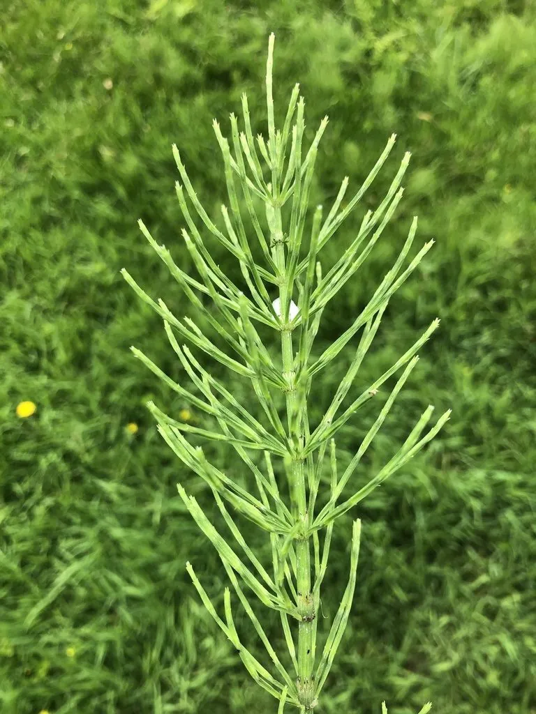

蕨类与裸子植物 · 植物界
问荆 Equisetum arvense

问荆是田边常见的古老蕨类，茎一节一节如迷你竹子，春季抽出孢子枝，夏季长出绿色营养枝，可用于监测土壤。
- 分类
- 门蕨类植物门纲木贼纲目木贼目科木贼科属木贼属
- 栖息环境
- 田边、沟渠、路旁与湿润荒地，喜微酸性土壤
- 地理分布
- 北半球温带与亚寒带广泛分布，中国各地常见
- 保护级别
- 暂无评估；农田中常被视为杂草
物种志
问荆是木贼科的多年生蕨类，株高 15–40 cm。它有明显的两种茎：春季先抽出肉质的孢子枝，淡褐色，顶端生有笔头状的孢子囊穗，成熟后枯萎；随后长出绿色的营养枝，细长中空，一节一节分明，节处轮生许多细长的分枝，形如小松树或迷你竹林。营养枝表面粗糙，富含硅质，摸起来有砂纸般的质感。
问荆靠根状茎和孢子繁殖，根状茎深埋地下，横走蔓延，很难彻底清除，因而成为农田和园圃中顽固的杂草。它喜湿润、微酸性土壤，常见于田边、沟渠、路旁与荒地。全草含问荆皂苷、黄酮等成分，民间作药用，有理气利尿之效，但全草有毒，需慎用。问荆也是金、银等矿藏的指示植物之一，在找矿中曾被用作线索。
形态与习性
- 株高15–40 cm
- 茎中空有节，表面富含硅质
- 孢子枝春季先出，顶端笔头状
- 营养枝绿色，节处轮生细枝
- 繁殖根状茎与孢子繁殖
- 用途药用，并可指示矿藏
- 注意全草有毒，不宜自行大量服用
趣味知识
- 问荆的茎表面富含硅质，古人曾用它打磨木器和金属。
- 它的根状茎能扎到地下 1 m 多深，是极难根除的田间杂草。
- 问荆对金、银等金属元素敏感，曾被地质学家当作找矿线索。